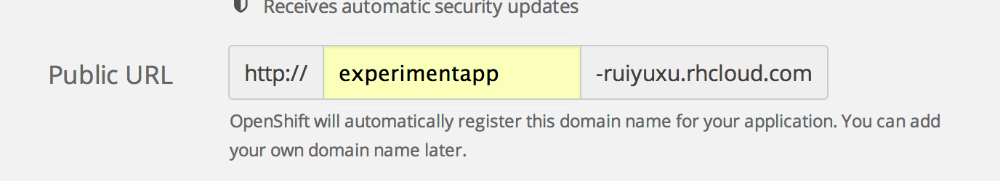

This experiment creates an online app on Openshift with NodeJs, MongoDB. It will be run locally and pushed to OpenShift for remotely run. This is the first try on OpenShift, so it only builds a webpage showing "Hello World!!!"
Step1: Open an account on OpenShift,
Step2: In the Applications page,
click the "Add Application" button. From the "Other types" list, choose the "Node.js 0.10". Edit the "Public
URL" as follows.

And then click "Create Application". After being successfully created, OpenShift will provide git information
for this application.
git clone ssh://5435802750044625c400047e@experimentapp-ruiyuxu.rhcloud.com/~/git/experimentapp.git/
cd experimentapp/
Click "Continue to the application overview page".
npm install express
npm install mongojs
Step5: Modify the server.js. For the first trial of the openshift, I just let it show "Hello
World" on the web page.
var express = require("express");
var app = express();
app.get('/helloworld', function (req, res) {
res.send("Hello World!!!");
});
app.listen(3000);
The local url of the Hello World app is
var express = require("express");
var app = express();
app.get('/helloworld', function (req, res) {
res.send("Hello World!!!");
});
var ipaddress = process.env.OPENSHIFT_NODEJS_IP || "127.0.0.1";
var port = process.env.OPENSHIFT_NODEJS_PORT || 8080;
app.listen(port, ipaddress);
Step7: After it can successfully run on the local machine, we can push it up to the openshift.
git add .
git commit -m "First experiment on openshift"
git push